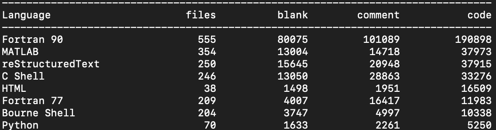

Welcome to the DART Developer's Guide
Goal of this document
A living document to describe the DART software workflow. Our current workflow is using GitHub.
Things we don't have yet:
- a project management system
Things we do have:
- standups
- issue tracking via GitHub
- code review via pull requests on GitHub
- this many lines of code:

DART flow
DART flow is the workflow to go from having an idea for a feature to getting the feature into the DART code, so your feature can be used do science.

-
Describe the problem you are trying to fix. Use GitHub issues to track the problem.
-
Add a label to the issue The label helps prioritize the issue. Is it a bug fix, is it a new feature, is it refactoring existing code? Use the label
back-burnerfor something that is low priority. -
Describe your solution in the issue. Give an estimation of how much code this will effect. Will your solution require changing several modules? The writing specifications section of this document gives an example of how to describe your solution.
-
Get some feedback on your solution, the standup is a good place to ask for volunteers. This is a good time to have an in-person meeting to chat about your spec.
-
Create a feature branch to use for your solution. Once you are happy with your feature branch, push the branch up to the main DART repo and create a pull request.
-
Be as helpful to your reviewers as you can. Only include changes relevant to your issue and avoid changes that are not relevant to the particular issue.
-
If your pull request is approved, merge into the main branch and create a release.
Feature Branch Workflow
DART is using a Feature Branch Workflow.
"The core idea behind the Feature Branch Workflow is that all feature development should take place in a dedicated branch instead of the main branch. This encapsulation makes it easy for multiple developers to work on a particular feature without disturbing the main codebase."
It also means, ideally, that the main branch will never contain broken code. Atlassian has a nice comparison of the various workflows people use.
Branch naming conventions
main
This is the main branch. It should always work.
feature-branch
Your feature branch should have a descriptive name which indicates what bug fix or feature the branch contains. For example, a feature branch for adding a flu forecasting model could be called: flu-model
gh-pages
This branch is used to serve the website dart.ucar.edu. It only has the website content. To make changes to the website, follow the instructions on https://github.com/NCAR/dart-web.
Using Git
DART is under version control with Git.
Setting up your git environment
Set your username and email that you want to be linked with git. What you select here will be the 'author' information for your commits.
git config --global user.name “Margaret Hamilton”
git config --global user.email mhamilton@nasa.gov
Set the editor you want to use for commit messages: vim, nano, emacs, notepad++, whatever your favorite editor is. In this example, I am setting my editor for commit messages to vim.
git config --global core.editor vim
Note this doesn't mean you have to edit all code with vim. This just means git will open vim when it wants you to write a commit message.
To display what your git settings are:
git config --list
Setting your terminal prompt to display the branch
For bash users you can add the following to your ~/.profile file to
display the branch you have checked out.
# Git branch in prompt.
parse_git_branch() {
git branch 2> /dev/null | sed -e '/^[^*]/d' -e 's/* \(.*\)/ (\1)/'
}
export PS1="\u@\h \W\[\033[31m\]\$(parse_git_branch)\[\033[00m\] $ "
Creating a feature branch
Create your feature branch from the main branch.
git clone https://github.com/NCAR/DART.git
cd DART
git checkout main
git checkout -b new-feature
where new-feature is the name of your feature branch.
Try not to name your branch after yourself, e.g barbara-liskov. Pick a name that represents what you are working on, e.g. oop-version-of-filter.
To push your branch up to the DART repo:
git push -u origin new-feature
Note
The -u flag means your local copy will track the remote repo. It is no
big deal if you don't do it, but it is nice to have git status tell you "your branch is up to date with
remote/new_branch_name" or "your branch is 2 commits behind
remote/new_branch_name"
Keeping your feature branch up to date with the main
As you are working on your feature branch, the main branch may have been updated.
To keep your feature branch up to date with the main:
git checkout main
git pull
git checkout new-feature
git merge main new-feature
Make sure you have committed any changes to your new-feature branch before updating from the main
Once your feature is ready for review, submit a pull request.
Commititing your code
How and when you commit your code can make life easier for other developers and your future self. In general, you should aim to make your code changes easy for other members of the DART team to review, cherry-pick, and revert. Ideally, you should:
- Separate functional changes from style changes
- Write good commit messages
Writing Good Commit Messages
one line short summary of the change
more detail if needed on why you changed what
For example,
Place ring in Mount Doom
Ring is destroyed, Sauron loses his power forever. All he created collapses,
the Nazgûl perish, and his armies are thrown into such disarray that Aragorn's
forces emerge victorious.
Be aware: commit messages are visible to the whole world on GitHub.
You can link to github issues on https://github.com/NCAR/DART/issues from commit messages using the #issue-number syntax, for example:
bug-fix for #245 namelist values need to be the same type as variable
We do not have a strict convention such as commitizen enfored for commits, but you may want to start your commit with one of the following to make searching log files easier.
bug-fix:
refactor:
style:
Public development
In general, all DART development is public, either on the DART repository or a fork of the DART repository.
Private development
When is it ok to use a private repo?
- Collaborators require a private repo for development.
- You want to have content for the DART team only.
If you want to use GitHub with a private version of the DART repo with your collaborators. You can create a new private repository on GitHub, for example https://github.com/your-private-repo, and use this new private repo as a remote. Follow the same conventions for feature branch workflow by creating a branch for you and your collaborators to use.
git clone https://github.com/NCAR/DART.git
cd DART
git checkout main
git checkout -b embargoed-feature
git remote add collab https://github.com/your-private-repo
git push -u collab embargoed-feature
In the above example,
https://github.com/your-private-repo is the private repository.
embargoed-feature is the branch where the private development will be done.
collab is the name of the remote.
To list all the remotes you have for a repository, use
git remote -v
Writing Specifications
The goal is software engineering is to solve problems. Code is one part of this.
A spec outlines how you are going to solve a particular technical problem. Here are some questions to have in mind when you sit down to write a spec:
- What is the problem you are trying to solve?
- Is this the right problem to be solving?
- What are the possible solutions to the problem?
- What are the trade-offs for the solution you chose?
- How should you test your solution? For each test, what is a pass, what is a fail
A good spec, has many advantages:
- You can get feedback on your design before you write a lot of code.
- It allows other people to get an idea of the scope of your problem, and prioritize the most critical parts.
- A good spec can be the base for your documentation.
- A spec can be used when judging how successful a particular effort was.
The drawbacks of specs:
- You might not really be able to think about the problem until you start writing the code.
- You may plan in great detail, but encounter unexpected problems that take your code in a completely different direction.
Note
When you write a spec, put your name on it.
Below is an outline of what to put in a spec with some examples.
Front Matter
Title: Using Zarr files with DART
Author: Carol Shaw
Date: November 5th 1982
Overview
Describe the goal of the project. The big picture, why it is important, what problem is it going to solve. An example,
DART needs to be able to work with Zarr files because data assimilation has become a key part of animating the next Toy Story movie and much of the computation will be done in the cloud.
Terminology
Define any terminology that someone reading the spec needs to know. For example,
Zarr : A file format for storing chunked, compressed arrays that plays nicely with cloud storage.
Functional Specification
This describes the expected behavior of the system. Its purpose is to describe how a user will interact with the system. One of the uses for a functional spec is in designing tests, because the tests should check the expected behavior of the system.
Default behavior :
What the system will do.
User options :
What options a user can choose, and what is the expected behavior for each option.
You may want to write the functional spec in the form of user stories:
Angelica Pickles is simulating a tornado with WRF and wants to output Zarr files. She sets the namelist options
restart-format = Zarrand runs filter.
Details about how a user interacts with the code, are probably the part of the spec that gives you the most bang for your buck.
Technical Specification
This describes how the solution will be implemented. This technical spec can be used to design unit tests. The technical spec may include performance requirements.
Open Issues
List any unsolved issues. This helps people reading the spec to understand the crux(es) for the project.
Non Goals
This describes what is out of scope for this project. For example,
The character design for Woody in the next Toy Story movie
GitHub
DART is hosted on GitHub
As a member of the NCAR organization you can create public and private repositories under the NCAR GitHub organization
The DART team is:
https://github.com/orgs/NCAR/teams/dart
If you are working with people outside the DART team, for example with summer interns or external collaborators, you may want to create a GitHub team to manage repository access. For example the team dart-siparcs was used for a 2021 SiParCS project.
There are four main ways developers and users interact with each other on GitHub:
At the top level of the DART repositroy is a directory .github. This
contains the templates for pull requests and issues.
./github/pull_request_template.md is the template for pull requests.
./github/ISSUE_TEMPLATE/bug_report.md is the template for bug reports.
./github/ISSUE_TEMPLATE/feature_request.md is the template for feature requests.
Blank issues are enabled on the DART repository. The templates control what shows up when a user clicks "bug-report" or "feature request".

If you want to edit the *.md templates and preview the changes, try the edits
out on a fork of DART.
Tracking tasks with GitHub issues
GitHub issues are a way to keep track of enhancements, bugs, and discussions about code. Use issues to:
- Report a bug
- Request/Propose a feature
Labels
GitHub allows issues to be labeled. Here are some you may want to use:
Bug : Something is incorrect or not working
Backburner : A problem that is very low priority, but might be worked on in the future
Science : A problem that needs science discussion to be resolved
You may want to add your own labels, for example, if you are working a lot with WRF, you may want to add the label WRF so you can search for all issues related to WRF.
Reporting Bugs
A bug report should contain the following:
- The steps someone needs to take to reproduce the bug.
- What you expected to happen.
- What actually happened.
Here is an example bug report:
-
Steps to reproduce:
- Use kroger brand cake mix.
- Mix 2 cups of water with into the cake mix to produce a batter.
- Turn on the NCAR oven in the Mesa Lab.
- Bake the batter in a pyrex dish for 20 minutes at 350F.
-
What I expected to happen:
A cake
-
What actually happened:
Cake batter not cooked at all.
Try to have a reproducer for the bug that is as small as possible. The smallest number of observations, the fewest time steps, the lowest resolution model.
Pull requests
The main branch of DART is protected. New code needs to be submitted as pull request. At least one approval from a member of the DART team is needed to merge code into main. The process to go from a pull request to released code is:
- review [reject, request changes, approve]
- make required changes
- merge
- tag a release
Reviewing
The key questions to think about when reviewing pull requests:
- Does this pull request address the issue? If the pull request contains other changes that are not related, it is ok to close the pull request.
- Has the code passed the required tests?
- Has the documentation been updated?
- Does the pull request improve the existing code?
- Does this pull request break backwards compatibility? If so, now may not be the time to merge this feature.
When giving comments on code, try to give comments that:
- are actionable.
- differentiate between a suggestion, a definite change, or a point that needs a discussion or clarification.
- are collaborative not accusatory.
If there are a lot of comments or questions on the code, schedule and in person meeting.
Checking out pull requests
For pull requests that are following DART flow you can checkout the feature branch from the DART repo
git fetch origin
git checkout feature-branch
To checkout a pull request that is not from a branch on the DART repository, for example a pull request from an external collaborator.
git fetch origin pull/ID/head:BRANCHNAME
git checkout BRANCHNAME
where ID is the number of the pull request and BRANCHNAME is your choice for the name of the branch
Being Reviewed
It can be quite difficult having someone review your code. Remember software engineering is programming integrated over time [1]. Code reviews are a process to produce better code and better developers. Karl Wieger's article Humanizing Peer Reviews is a good read about overcoming some of the barriers to successful peer review.
[1] WINTERS, T., MANSHRECK, T., & WRIGHT, H. (2020). Software engineering at Google: lessons learned from programming over time.
Creating a Release
The DART releases are available on GitHub:
https://github.com/NCAR/DART/releases
The releases loosely follows the rules of semantic versioning with a v at the start, e.g. v9.10.11.
vMAJOR.MINOR.PATCH
Given a version number vMAJOR.MINOR.PATCH, increment in the following way:
| MAJOR | version when you make incompatible API changes |
| MINOR | version when you add functionality in a backwards compatible manner |
| PATCH | version when you make backwards compatible bug fixes. |
You may want to use additional labels for pre-release or other code as
extensions to the vMAJOR.MINOR.PATCH format.
Make sure your pull request is up-to-date with main before merging and creating a release.
To create a release on GitHub:
-
Decide on a tag number following the convention
vMAJOR.MINOR.PATCH -
Update the CHANGELOG.rst with the tag and a brief desciption of the changes.
-
Change the version in
conf.py -
Merge into main
-
Create a release on GitHub from the main branch, by clicking on
Draft a new release -
Enter the tag number. Make sure the target branch is main.
-
Give the release a title and description.
-
Click publish to create the release.
For a major release or critical bug-fix releases, you may want to email the dart-users group.
Once the code has been merged into main and released, you can delete the feature-branch.
GitHub Playground
Ideal-rotary-phone is a no-consequence repo for trying out GitHub features. It is a good place to practice branching and pull reviews.
The repository is visible only to members of the DART GitHub team and the occcasional intern or student.
https://github.com/NCAR/ideal-rotary-phone
The content is consciously quite silly. This is s to keep the focus on git and GitHub without having to think about creating sensible code.
Dealing with users
Users are people who use DART. They may also develop their own code and/or scripts.
There are several ways users can communicate with us.
- User support requests emailed dart@ucar.edu
- Direct email/meeting with DAReS staff
- GitHub issues
- GitHub discussions
GitHub issues are for bug reports and features for the code. If people are using GitHub issues for support requests, direct the user to dart@ucar.edu and close the issue. If a GitHub issue is not a clear issue or feature request, you can convert the issue to a discussion.
Things we do not have:
- ticketing system (e.g. an email to dart@ucar.edu creates a ticket)
- user forum
User reported problems
Here are some tips for working with users when they are reporting problems:
Find out which version of DART a person is using. Ask them to send you the output of
git describe --tags
The output will look something like this:
v11.4.0-1-ge74ab9573
In this example:
version: v11.4.1
number of commits the user has made to this version: 1
So the user has made and committed changes to DART.
Note the use of --tags in the git describe command. GitHub releases are lightweight tags, rather
than annotated tags. If you omit the --tags you'll get the number of commits since the last
annotated tag:
v9.12.refactored-1933-g27f85ee47
If the user reports the message is
fatal: No names found, cannot describe anything.
There are no tags in the repo. The user has forked dart with only the main branch, no branches
or tags. Ask the user to send the output of git log to get some information on which version
of the code they are using.
be aware that we occasionally have users who are still using a version of DART checked out from an svn repositiory.
The default option for GitHub forks is main branch only. Unfortunately this means the tags are not part of the fork when using the default options:

GitHub Actions
GitHub Actions is a software development automation platform that is integrated into GitHub repositories. The platform allows for the creation of several types of automated tasks such as build, test, and deploy. A set of these tasks is referred to as a workflow.
DART utilizes GitHub Actions to run automated tests when a pull request is submitted.
The workflow is called action_on_pull_request.yml.
The current tests are building and running lorenz_96 (mpi) and lorenz_63 (no mpi).
A pull request can not be merged until the tests pass.
You can view the details of each GitHub action by clicking on Details
The tests run on every commit to a pull request, so it is important that the tests run quickly. The readthedocs documentation build takes ~89 seconds.
Aim to beat 89s with any tests you add.
Workflows
GitHub Actions workflows are configured with YAML files.
Example GitHub Actions YAML file:
name: Example GitHub Actions YAML Structure
run-name: ${{ github.actor }} triggered workflow via Push
on: push # trigger workflow on Push to repo
jobs:
echo-hello-world: # name of current workflow job
runs-on: ubuntu-latest # choose operation system for workflow to run on
steps:
- name: Echo 'Hello World!' to shell # Divide instruction sets by categories or 'names'
run: echo 'Hello World!' # 'run' label executes the paired value in the runner shell
Workflow YAML files must be placed inside the repository's .github/workflows/ directory.
Results and logs of your workflows are located in the 'Actions' tab of your GitHub Repository.
This document only aims to give a brief overview of GitHub action workflows. For indepth documentation visit docs.github.com.
Workflow Triggers
GitHub Actions contains many possible triggers for starting your workflows.
Example trigger events to start your workflow include:
- on push
- on pull requests
- opening/closing
- subsequent commits to pull requests
- ready_for_review
- on issues
- new issue creation
- comment added to an issue
- closing of an issue
- on fork
DART's action_on_pull_request.yml workflow is triggered upon the creation and reopening of any pull requests to DART. Additionally, the synchronize type specifies that the workflow should be triggered for any subsequent commits made to the pull request branch.
on:
pull_request:
types: [ opened, reopened, synchronize, ready_for_review ]
More event trigger options can be found here.
Workflow Runners
Runners are the machines that execute jobs in a GitHub Actions workflow. Runners are hosted by GitHub and what is available depends on the GitHub orgainizaion tier ($$$). Each workflow job must specify their runner instance type.
The runners is specified by runs-on: and can be chosen from this list of runner instances.
For DART's action_on_pull_request.yml workflow, the instance chosen is ubuntu-latest which loads an Ubuntu operating system on into your runner.
runs-on: ubuntu-latest # runner type
container: # specifies a container to run on top of runner
image: hkershaw/dart-dep:1.0 # uses dart-dep:1.0 container that is pulled from Dockerhub
options: "--cap-add=SYS_PTRACE" # nasty argument required for OpenMPI to work correctly in containers
At the time of writing, Linux-based runners have:
- 2 x84_64 CPU cores
- 7 GB of RAM
- 14 GB of local scratch storage
The pull request workflow also loads pre-built Docker container that is hosted on Dockerhub. The usage of a container here is for speed. The libraries that DART depend on, netcdf and mpi, are installed in the container. The recipes for DART Docker containers are stored in the DART-containers, while the pre-built container image is hosted and pulled from the Dockerhub repository hkershaw/dart-dep:1.0.
Workflow Jobs
Workflow jobs are the specific sets of tasks that can be configured to run on your workflow. Multiple jobs with potentially different runner instance types can be configured to run in your workflow.
Important: multiple jobs are run parallelly on separate runner instances. One job cannot see the details of another job. However, job dependencies can be configured in your workflow (Using conditions to control job executions).
GitHub Actions offer additional design options for running multiple parallel jobs such as job matrices.
Workflow Testing
When developing a workflow, it is a good idea to create a separate repository for development as to not disturb anyone that follows the main repository. For DART, there exists the following test repository, https://github.com/NCAR/github-actions-test, to develop and test-run your workflows.
As you develop your workflow, you will notice that for test-runs, there will be a lot (potentially 100s) of commits made to your workflow feature branch. As a result, it is a good idea to rebase and square the commits made before merging into the main branch.
There are open-sourced tools available that help with the development process and even allow for workflows to run locally on your machine for testing:
Tidbits
- using a
YAMLvalidator available online (such as this) is instrumental for catching syntactical errors withYAMLfiles - after each
run:step, you will be placed back to the top-most directory of the runner and will have tocdback to your working directory if you split your tasks across multiplerun:steps. - for every run of a GitHub Actions workflow, a GitHub token is generated for the runner instances to use such that it is able to perform tasks such as checking out your repo. For DART, the default permissions of the generated GitHub token has been set to read-only, however, it can be changed in a workflow. If your workflow requires additional permissions, consult with someone about if it is necessarily needed.
- the following pages are useful for securing your workflow:
Composite Actions
Composite GitHub Actions are re-useable and shareable bits that can be packaged and inserted into workflows.
Requirements
Composite actions have the following structural requirements:
If the composite action is hosted within the main repository
- a directory that signifies the name of the composite action is located in
.github/actions/ - inside that directory must exist a file named
action.yml
For DART's build_run_model composite action, its path in DART is: .github/actions/build_run_model.
The location of the action.yml is .github/actions/build_run_model/action.yml.
If you decide to host your composite action as its own GitHub repository:
- the name of the repository is the name of the composite action
- an
action.ymlfile must exist in the top-most directory of the repository
For an example of a GitHub hosted composite action, see actions/checkout's repo, which is a composite action commonly used for checking out a GitHub repository into your GitHub Actions' runner instance.
This document will go over an example of how the composite action build_run_model is used inside the workflow action_on_pull_request.yml in DART/.github/actions/.
For a more detailed documentation, take a look at GitHub's getting started guide for composite actions: https://docs.github.com/en/actions/creating-actions/creating-a-composite-action.
Usage
Before going over the specifics of how a composite action is constructed, let's first take a look at how a composite action is used inside a workflow.
Inside action_on_pull_request.yml:
jobs:
build-run-lorenz_96:
[...]
steps:
- name: Checkout repo into runner instance
uses: actions/checkout@v3
Invocation of a composite action is done by the uses: key. In the above example, the publically available checkout composite action is being invoked. When using a hosted composite action, the syntax is <username>/<composite_name>[@v<release-version>]. For the above case, we are using version 3 of the checkout composite action.
If the composite action being used has input parameters available, then invoking that action would look like this:
jobs:
build-run-lorenz_96:
[...]
steps:
- name: Checkout repo into runner instance
uses: actions/checkout@v3 # invoking remotely hosted composite action
with: # for specifiying arguments passed to composite action
path: ... # specify the path for checkout action to be performed in
token: ...
where values assigned to the keys path & token would be passed to the composite action to be used.
If the composite action exists locally within your repository (inside .github/actions/[composite_action_dir]), invoking the composite would look like the following:
jobs:
build-run-lorenz_96:
[...]
steps:
[...]
- name: Build and run lorenz_96
uses: ./.github/actions/build_run_model
with:
model: lorenz_96
run-program: ./filter
use-mpi: true
mpi-n-tasks: 2
For local composite actions, the uses key requires a full path from repository directory to the directory of your composite action containing the action.yml file.
As the example indicates, the composite action build_run_model is being invoked with four arguments: model, run-program, use-mpi, and mpi-n-tasks. A composite action may contain arguments that are not required to be specified upon invocation.
action.yml File
Now that we've taken a looked at how composite actions can be called, let's look at how the composite action file action.yml is constructed. Specifically, build_run_model's action.yml.
name: 'Build and run model'
description: 'Build and run given model'
# All possible input parameters that can be specified when using this composite action
inputs:
models-directory:
description: 'path to top-level directory containing the model to build and run'
type: string
required: false
default: 'models/'
model:
description: 'name of existing DART model'
type: string
required: true
default: 'lorenz_96'
[...]
Near the top of action.yml, is where the different input parameters are located. To references an argument passed to the composite action from a workflow, the syntax will look as follows: ${{ inputs.<parameter_name> }}.
Following the specified possible input parameters, is the meat of composite actions.
runs:
using: "composite"
steps:
# Steps to create Makefile template
- name: Creating Makefile template :)
run: |
cd build_templates
cp mkmf.template.gfortran mkmf.template
echo 'FFLAGS = -g -Wuninitialized -Wunused -ffree-line-length-none -fbounds-check -fbacktrace -ffpe-trap=invalid,zero,overflow $(INCS)' >> mkmf.template
shell: bash
# Steps to compile and build model
- name: Building ${{ inputs.model }} model
run: |
cd ${{ inputs.models-directory }}/${{ inputs.model }}/work
./quickbuild.sh
shell: bash
[...]
A composite action is initially defined the using: "composite" line after the run: label. A composite action is almost like a giant run: instruction from workflows, but is more flexible with the use of input parameters. One key point to make is that shell: bash has to be specified for each run step: inside a composite action.
DART Docker Containers
DART Docker files are stored in the DART-containers repo.
If you add containers to this repo, follow the convention of
one Dockerfile per directory.
NCAR has a dockerhub organization, but has used up its allotted number of users. Possibly at some point NCAR will increase their dockerhub licenses.
DART Docker images are hosted on the hkershaw dockerhub.
If we make more use of containers, we may need to look at creating a DART organization.
DART web presence
There are two components to the DART web presence:
- The documentation which is built from the .rst files in the main branch
- The DART website which is built from the private repo dart-web and served thought the github pages branch on https://github.com/NCAR/DART.
DART Documentation
The documentation for DART is written in reStructuredText, then converted to html using Sphinx. The conversion to html is done automatically by readthedocs, when new content is pushed to a branch.
Documentation is built for pull requests. You can view the documentation
build by clicking on show all checks then details.

You can build the DART documentation locally using Sphinx.
Installing Sphinx Locally
To install Sphinx in a Python virtual environment:
python -m venv dev-guide
source dev-guide/bin/activate
pip install Sphinx==6.2.1
pip install sphinx-rtd-theme==1.2.2
Copy the following example Makefile to your machine.
Change the SOURCEDIR line to match where you have DART checked out.
# Minimal makefile for Sphinx documentation
#
# You can set these variables from the command line, and also
# from the environment for the first two.
SPHINXOPTS ?= -n
SPHINXBUILD ?= sphinx-build
SOURCEDIR = /Users/hkershaw/DART/Refactor/Build_system/DART.buildit
BUILDDIR = dart-docs
# Put it first so that "make" without argument is like "make help".
help:
@$(SPHINXBUILD) -M help "$(SOURCEDIR)" "$(BUILDDIR)" $(SPHINXOPTS) $(O)
.PHONY: help Makefile
# Catch-all target: route all unknown targets to Sphinx using the new
# "make mode" option. $(O) is meant as a shortcut for $(SPHINXOPTS).
%: Makefile
@$(SPHINXBUILD) -M $@ "$(SOURCEDIR)" "$(BUILDDIR)" $(SPHINXOPTS) $(O)
To make the docs, run:
make html
To view the docs:
open dart-docs/html/README.html
with your favorite browser.
To deactivate the virtual environment
deactivate
DART website
There are two repositories to be aware of for the DART website:
https://github.com/NCAR/dart-web.git Is the private repository used to build the site.
The website is hosted via GitHub pages at https://dart.ucar.edu.
For instructions on building the website, read the README at https://github.com/NCAR/dart-web